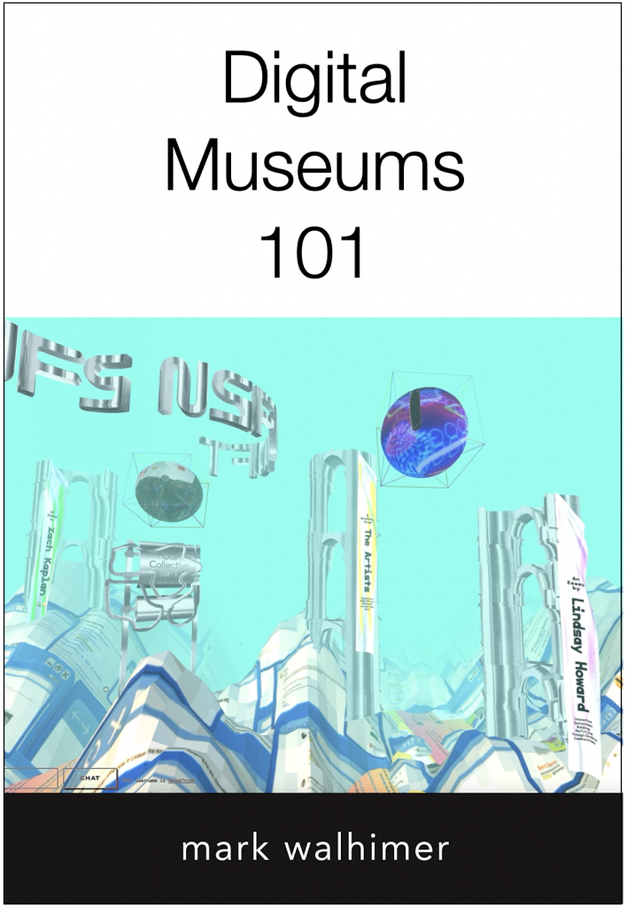

Digital Museums.
A how-to book for creating digital museum experiences — for museum directors, board members, staff, and students.

· Mixed
How digital media changed museums.
Digital media has changed how museums create exhibitions, market themselves, and raise funds. COVID-19 accelerated that change, including the move to online programming. Digital Museums 101 uses diagrams and an iconography system to show how to build digital programming and sustainable operations.
Generation Z and Generation Alpha are the first digital natives. They perceive and process content differently, and museums have to adapt.
- Digital museum management
- Museum digital exhibitions — online, in-person, and mixed
- Digital museum marketing
- Digital museum fundraising
- Digital museum operations
Five questions.
What is a digital museum?
What is a digital exhibition?
How do you create a digital museum strategy?
How do you create a digital experience?
What is the future of digital museums?
Templates, guides, and resources.
Free templates and how-to guides for creating, marketing, and fundraising for digital museum content, plus an online course.
Resources
Associations, reports, and research on digital museums, digital learning, and sustainability.
Browse → 02Articles
One article for each part of the book, from "What is a digital museum?" to the future of digital museums.
Read → 03Online Course
The companion course at museumcourses.com, available for an additional fee.
Visit ↗COVID-19 changed museums permanently.
Directors, board members, staff, city managers, and mayors need to understand how and why museums have changed in order to connect with their audiences and build sustainable institutions. Museum Planning LLC plans and creates digital experiences for museum audiences.
- Augmented Reality (AR)
- Extended Reality (XR)
- Virtual Reality (VR)
- Projection Mapping
- Artificial Intelligence (AI)
- Tangible Digital
Plan the digital museum your audience expects.
Set up a video call to talk through digital strategy and experiences for your museum's audiences.